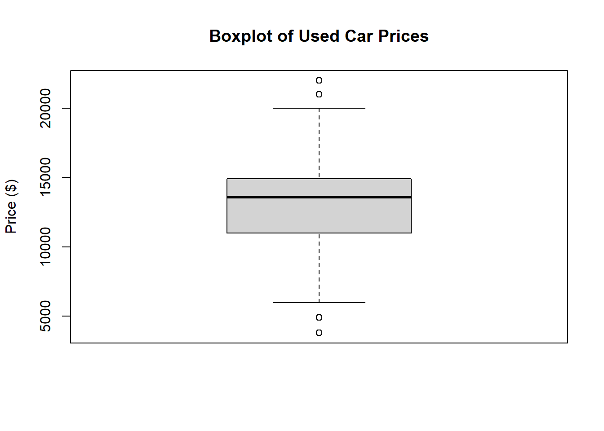
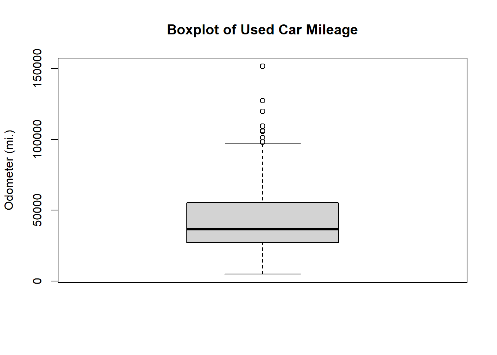
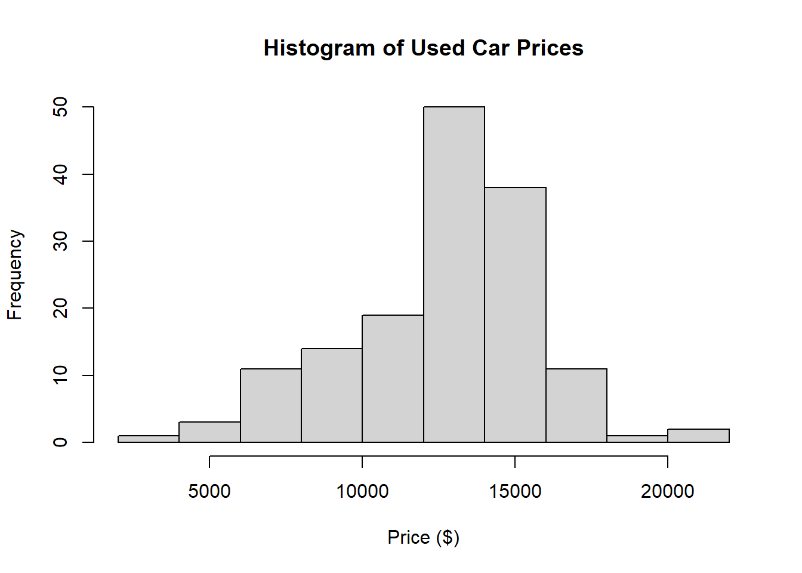
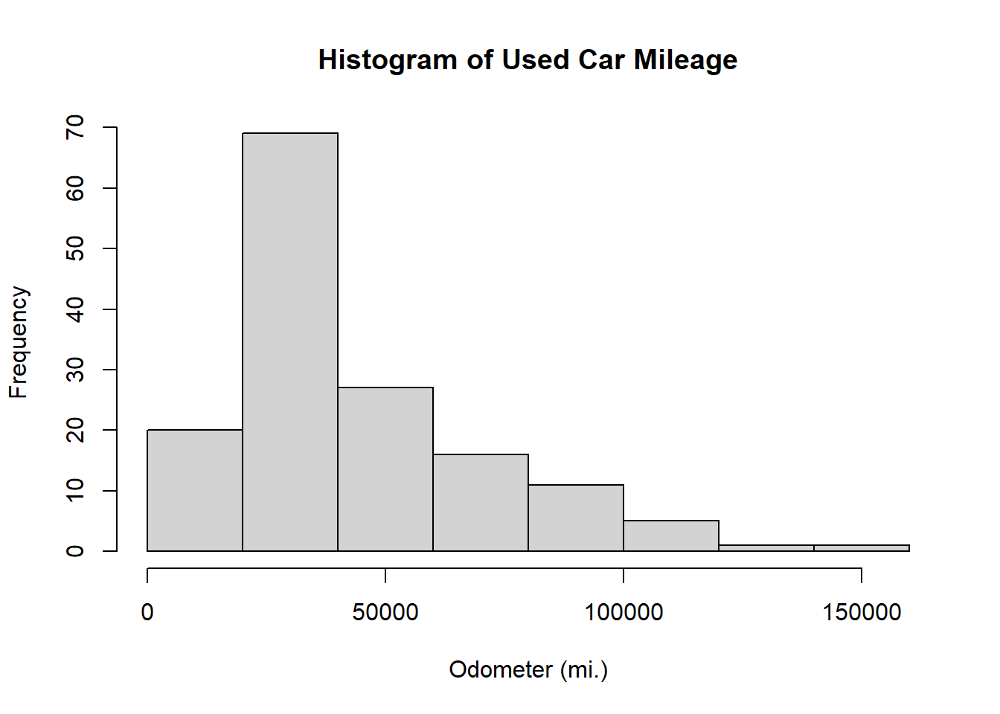
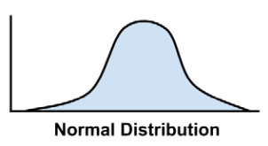
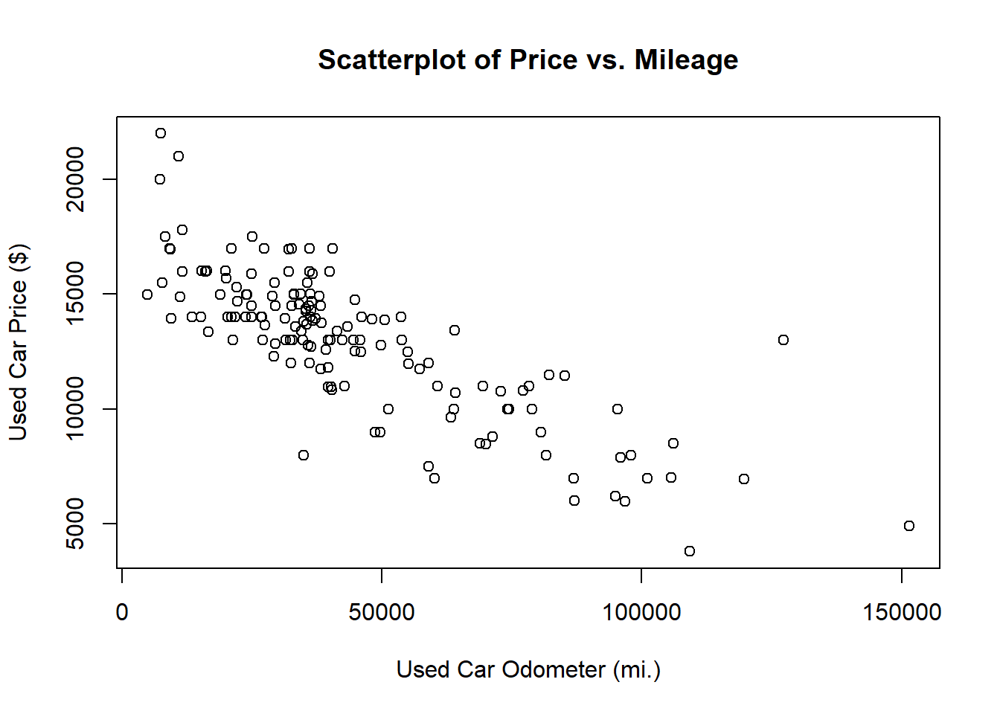
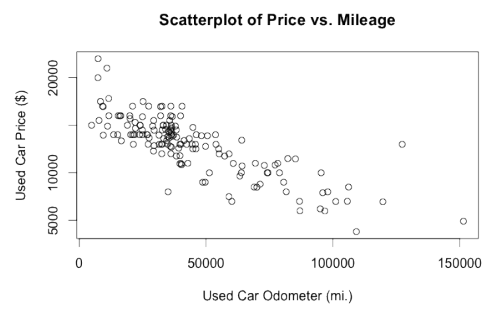

subject_name <- c("John Doe", "Jane Doe", "Steve Graves")
temperature <- c(98.1, 98.6,101.4)
flu_status <- c(FALSE, FALSE, TRUE)Resumen-cap1-2
Los orígenes del aprendizaje
Las primeras bases de datos han sido registradas por el entorno observable, ya que primero se observa y luego se registra en papel, pero hoy en día estos datos son registrados a través de bases de datos computarizadas que han ido en constante crecimiento.
Un aporte para estas bases ha sido la invención de los sensores, los cuales procesan los datos de manera muy distinta a una persona sin necesidad de traducción al lenguaje humano, los datos sensoriales en bruto siguen siendo objetivos.
Los cuales se han implementado en el campo de estudio interesado en el desarrollo de algoritmos informáticos para la transformación de datos en acciones inteligentes se conoce como aprendizaje automático. El constante crecimiento de los datos requería potencia informática adicional, lo que a su vez estimuló el desarrollo de métodos estadísticos para analizar grandes conjuntos de datos. Esto creó un ciclo de avance que permitió recopilar datos aún más grandes e interesantes.
Usos y abusos del aprendizaje automático
El aprendizaje automático por lo general es utilizado para:
• Predecir los resultados de las elecciones
• Identifique y filtre los mensajes de spam del correo electrónico
• Prever actividad delictiva
• Automatice las señales de tráfico de acuerdo con las condiciones de la carretera
• Producir estimaciones financieras de tormentas y desastres naturales
• Examinar la rotación de clientes
• Crea aviones de pilotaje automático y coches de conducción automática.
• Identificar personas con capacidad para donar
• Dirigir la publicidad a tipos específicos de consumidores
Para ello un algoritmo de aprendizaje automático toma datos e identifica patrones que se pueden usar para la acción. En algunos casos, los resultados son tan exitosos que parecen alcanzar un estatus casi legendario.
Pero a su vez los datos de varias personas son usado para un algoritmo de aprendizaje automático que aprende patrones típicos de comportamiento que luego se pueden usar para hacer recomendaciones.
CONSIDERACIONES ÉTICAS
Para usar de manera los algoritmos se debe tener precaución al obtener o analizar datos para evitar infringir leyes, violar términos de servicio o acuerdos de uso de datos, abusar de la confianza o violar la privacidad de los clientes o del público. Por cual se usa ciertas jurisdicciones que pueden impedir usar datos raciales, étnicos, religiosos u otras clases.
Tomando en cuenta que excluir datos personales puede no ser suficiente, debido que algunos algoritmos de aprendizaje automático pueden aprender esta información de forma independiente sin darse cuenta
CÓMO APRENDEN LAS MAQUINAS
El aprendizaje de una maquina tiene un procedimiento similar a un humano, esta se puede dividir de la siguiente manera
Entrada de datos: es la observación, almacenamiento de memoria y recuerdo para proporcionar una base fáctica para un razonamiento posterior.
Abstracción: Implica la traducción de datos en representaciones más amplias.
Generalización: Utiliza datos abstractos parra formar una base para la acción
Las estrategias de aprendizaje comúnmente utilizadas para crear un esquema o un mapa conceptual son similares a cómo una máquina realiza la abstracción del conocimiento.
En los seres humanos, todo el proceso ocurre de manera subconsciente. Recordamos, deducimos, inducimos e intuimos. Sin embargo, para una computadora, estos procesos deben hacerse explícitos. Por otro lado, este es un beneficio del aprendizaje automático. Debido a que el proceso es transparente, el conocimiento aprendido se puede examinar y utilizar para acciones futuras.
ABSTRACCION Y REPRESENTACION DEL CONOCIMEINTO
La abstracción de datos tiene el trabajo de asignar un significado a los datos, mientras que la representación del conocimiento es la formación de estructuras lógicas que ayudan a convertir la información sensorial en bruto en una percepción significativa.
Capacitación: Proceso de ajustar un modelo particular a un conjunto de datos.
GENERALIZACIÓN
El término generalización describe el proceso de convertir el conocimiento abstracto en una forma que se puede utilizar para la acción. Específicamente, si imagina un conjunto hipotético que contiene todas las teorías posibles que podrían establecerse a partir de los datos, la generalización implica la reducción de este conjunto a un número manejable de hallazgos importantes.
El algoritmo empleará heurística, o conjeturas informadas sobre dónde encontrar los conceptos más importantes.
Pero también se debe tomar en cuenta que las heurísticas empleadas por los algoritmos de aprendizaje automático también dan lugar a veces a conclusiones erróneas. Si las conclusiones son sistemáticamente imprecisas, se dice que el algoritmo tiene una inclinación
EVALUAR EL ÉXITO DEL APRENDIZAJE
Una vez que un modelo ha sido entrenado en un conjunto de datos inicial, el modelo se prueba en un nuevo conjunto de datos y se juzga en qué medida su caracterización de los datos de entrenamiento se generaliza a los nuevos datos
En parte, el hecho de que los modelos no generalicen perfectamente se debe al problema de ruido, o variaciones inexplicables en los datos. Tales como:
• Error de medición debido a sensores imprecisos que a veces suman o restan
un bit de la lectura
• Problemas con los datos de informes, como que los encuestados informen respuestas aleatorias a
las preguntas de la encuesta para terminar más rápido
• Errores causados cuando los datos se registran incorrectamente, incluidos valores faltantes, nulos,
truncados, codificados incorrectamente o dañados
Se dice que un modelo que parece funcionar bien durante el entrenamiento, pero lo hace mal durante las pruebas está sobre ajustado al conjunto de datos de entrenamiento, ya que no se generaliza bien.
PASOS PARA APLICAR EL APRENDIZAJE AUTOMÁTICO A SUS DATOS
- Recolectando datos: los datos registrados ya sea en una hoja de papel o en hojas de cálculo, se deberá pasarse a un formato electrónico adecuado para el análisis, de tal manera que los datos nos sirvan como material de aprendizaje que utiliza un algoritmo para generar conocimiento procesable
- Exploración y preparación de los datos: Para la preparación de datos se necesita una calidad alta en los datos que se utilizan, debido a que un 80% del aprendizaje automático se dedica a aprender más de los mismos y sus matices mediante la exploración de datos.
- Entrenamiento de un modelo en los datos: Una vez preparados los datos para el análisis, se podrá tener una idea mas clara sobre lo que se espera aprender de dichos datos. Lo cual se transmitirá a través de un algoritmo apropiado que representará los datos en forma de modelo
- Evaluación del rendimiento del modelo: Es importante evaluar el aprendizaje del algoritmo a partir de su experiencia. Este se puede evaluar mediante la precisión del modelo para desarrollar medidas de rendimiento específicas para la aplicación.
- Mejora del rendimiento del modelo: En caso de ser necesario un mejoramiento del modelo, se utiliza estrategias más avanzadas para un mayor rendimiento del modelo, además de ayudarse con datos adicionales y en últimos casos cambiar completamente el modelo
ELEGIR UN ALGORITMO DE APRENDIZAJE AUTOMÁTICO
Para poder elegir un algoritmo adecuado de manera eficiente, se hace coincidir las características de los datos de los enfoques disponibles. Por lo cual es útil pensar en este procedimiento mientras se recopila, explora y limpia los datos.
PENSANDO EN LOS TIPOS DE ALGORITMOS DE APRENDIZAJE AUTOMÁTICO
Los algoritmos de aprendizaje automático se dividen en:
Modelo Predictivo: Usado para tareas de predicción de un valor usando otros valores en el conjunto de datos. El algoritmo de aprendizaje intenta descubrir y modelar la relación entre el objetivo característico recibiendo instrucciones claras sobre lo que necesitan aprender y cómo deben aprenderlo, el proceso de entrenamiento de un modelo predictivo se conoce como aprendizaje supervisado.
Modelo Descriptivo: se utiliza para tareas que se beneficiarían de la información obtenida al resumir datos de formas nuevas e interesantes. A diferencia de los modelos predictivos que predicen un objetivo de interés, manteniendo la misma importancia para todas las características de dicho objetivo. De tal manera que el modelo también es llamado aprendizaje sin supervisión
HACER COINCIDIR SUS DATOS CON UN ALGORITMO APROPIADO
En la tabla 1 se pueden observar los tipos generales de algoritmos:

Para hacer doincidir una tarea de aprendizaje con un enfoque autom[atico es necesario comenzar con 4 tipos de tareas:
Clasificación
Predicción numérica
Detección de patrones
Agrupación
Uso de R para el aprendizaje automático
Es una herramienta muy util para el el aprendizaje automático y gracias a que es un código abierto no hay cargo adicional por funcionalidad, una comunidad de expertos que contribuyen al software.
Instalación y carga de paquetes R
La forma más directa de instalar un paquete es con la función install.packages( ).
\[>install.packages("RWeka")\]
R se conectará a CRAN y descargará el paquete en el formato correcto para su sistema operativo.
Si necesita instalar un paquete desde otra ubicación se puede usar el siguiente comando:
\[>install.packages("RWeka", lib="/path/to/library")\]
Gestión y comprender los datos
Estructuras de datos R
Las estructuras de datos que se utilizan en R están diseñadas con el fin de facilitar la manipulación de los datos, las estructuras más utilizadas son: vectores, factores, listas, matrices y data frames.
Vectores
Estructura fundamental, almacena un conjunto ordenado de valores llamdo elementos. Dentro del vector todos los elementos deben ser del mismo tipo.
Existen varios tipos de vectores:
Entero: sin decimales
Numérico: con decimales
Personajes: datos de texto
Lógico: Verdadero o falso
Para la creación de vectores se puede utilizar:
Para lograr extraer un dato específico se utiliza el comando:
temperature[2][1] 98.6temperature[2:3][1] 98.6 101.4Para excluir valores se puede utilizar el símbolo (-):
temperature[-2][1] 98.1 101.4Otra forma para excluir datos es con el siguiente comando:
temperature[c(TRUE, TRUE, FALSE)][1] 98.1 98.6Factores
Los rasgos que representan una características con categorías de valores son llamdos nominales.
Para este tipo de datos existe una estructura específica en R conocida como factor, este es un caso especial de vector.
Para crear un factor a partir de un vector de character se debe aplicar factor ( )
gender <- factor(c("MALE","FEMALE", "MALE"))
gender[1] MALE FEMALE MALE
Levels: FEMALE MALELos niveles comprenden un conjunto de posibles categor[ia que podr[ian tomar los datos, al crear factores se puede agregar niveles adicionales:
blood <- factor(c("O","AB","A"),levels=c("A","B","AB","O"))
blood[1] O AB A
Levels: A B AB OLISTAS
Se utiliza para almacenar un conjunto ordenado de valores. Permite recopilar diferentes tipos de valores:
subject_name[1][1] "John Doe"temperature[1][1] 98.1flu_status[1][1] FALSEgender[1][1] MALE
Levels: FEMALE MALEblood[1][1] O
Levels: A B AB OEsta estructura no permite agregar todos los datos m[edicos de un paciente en un objeto que se utilice de manera repetida. Similar al comando anterior se utiliza el comando list( ), adem[as de permitir asignar un nombre para cada valor en la secuencia.
subject1 <- list(fullname = subject_name[1],
temperature = temperature[1],
flu_status = flu_status[1],
gender = gender[1],
blood = blood[1])Para poder visualizar los datos se utiliza:
subject1$fullname[1] "John Doe"subject1$temperature[1] 98.1subject1$flu_status[1] FALSEsubject1$gender[1] MALE
Levels: FEMALE MALEsubject1$blood[1] O
Levels: A B AB Osubject1[2]$temperature
[1] 98.1subject1$temperaturaNULLsubject1[c("temperatura", "estado_gripe")]$temperaturaNULLsubject1[c("temperatura", "estado_gripe")]$estado_gripeNULLData frames
La estructura de datos de R más importante utilizada en el aprendizaje automático es data frames, esta estructura es similar a una hoja de cálculo (filas, columnas). Para explicar como crear un data frame utilizaremos los vectores de datos de pacientes que anteriormente se crearon.
pt_data <- data.frame(subject_name, temperature, flu_status,gender, blood, stringsAsFactors = FALSE)Como se observa se adiciono el parámetro stringsAsFactors = FALSE, al especificar esta opción impedimos que R convierta cada vector de caracteres en un factor. Los datos se muestran en forma de matriz.
pt_data subject_name temperature flu_status gender blood
1 John Doe 98.1 FALSE MALE O
2 Jane Doe 98.6 FALSE FEMALE AB
3 Steve Graves 101.4 TRUE MALE APara extraer columnas enteras la forma más directa es referirse por el nombre:
pt_data$subject_name[1] "John Doe" "Jane Doe" "Steve Graves" pt_data[c("temperature", "flu_status")] temperature flu_status
1 98.1 FALSE
2 98.6 FALSE
3 101.4 TRUEPodemos extraer valores del data frame, sin embargo se debe especificar la posición de las filas (primero) y columnas (segundo).
pt_data[1, 2][1] 98.1En caso de necesitar mas de una fila o columna se lo debe escribir de la siguiente manera:
pt_data[c(1, 3), c(2, 4)] temperature gender
1 98.1 MALE
3 101.4 MALEPara extraer todas las filas o columnas, se debe dejar en blanco la parte de la fila o columna.
pt_data[, 1][1] "John Doe" "Jane Doe" "Steve Graves"pt_data[1, ] subject_name temperature flu_status gender blood
1 John Doe 98.1 FALSE MALE Opt_data[ , ] subject_name temperature flu_status gender blood
1 John Doe 98.1 FALSE MALE O
2 Jane Doe 98.6 FALSE FEMALE AB
3 Steve Graves 101.4 TRUE MALE AAsi mismo para extraer valores en lista o excluir valores se puede utilizar los comandos que se utilizaron en vectores y listas.
pt_data[c(1, 3), c("temperature", "gender")] temperature gender
1 98.1 MALE
3 101.4 MALEpt_data[-2, c(-1, -3, -5)] temperature gender
1 98.1 MALE
3 101.4 MALEMATRICES Y ARRAYS
La matriz es una estructura bidimensional que puede contener cualquier tipo de de datos, aunque por lo general almacena datos numericos debido a que es utilizada para operaciones matemáticas.
Para crear una matriz se utiliza la función matrix( ) :
m <- matrix(c('a', 'b', 'c', 'd'), nrow = 2)
m [,1] [,2]
[1,] "a" "c"
[2,] "b" "d" m1 <- matrix(c('a', 'b', 'c', 'd'), ncol = 2)
m1 [,1] [,2]
[1,] "a" "c"
[2,] "b" "d" Con este comando R carga primero la columna 1 de la matriz y luego la columna 2, esto se le conoce como orden de columna principal. Veamos un ejemplo con 6 valores:
m <- matrix(c('a', 'b', 'c', 'd', 'e', 'f'), nrow = 2)
m [,1] [,2] [,3]
[1,] "a" "c" "e"
[2,] "b" "d" "f" m1 <- matrix(c('a', 'b', 'c', 'd', 'e', 'f'), ncol = 2)
m1 [,1] [,2]
[1,] "a" "d"
[2,] "b" "e"
[3,] "c" "f" Al igual que los data frame los valores de las matrices se puede extraer usando [fila, columna]
m[1, ][1] "a" "c" "e" m[, 1][1] "a" "b"GESTION DE DATOS CON R
Las herramientas de R para cargar datos son muy utiles a la hora de trabajar con conjuntos de datos extensos.
GUARDAR Y CARGAR ESTRUCTURAS DE DATOS R
Para una estructura de datos en particular en un archivo que pueda volver a cargarse más tarde, puede usar la funcion save( ) la cual permite estructuras de datos R en la ubicacion deseada. Se puede guardar los archivos en una extension RData.
#save(x, y, z, file = "mydata.RData")El comando load( ) recreará las estructuras de datos ya guardadas que se encuentran en RData.
#load("mydata.RData")IMPORTAR Y GUARDAR DATOS DE ARCHIVOS CSV
Existen varios formatos para almacenar los datos publicamente, los archivos de texto son un claro ejemplo de esto y es considerado casi universal.
Un archivo de datos tabular tiene una estructura de matriz, de modo que se pueda tener en cada fila un ejemplo y el mismo número de características, los valores de estas características se encuentran separadas por un delimitador (símbolo predefinido) .
El archivo de datos tabular más conocido es el Comma Separated Values (CSV) el cual utiliza una coma como delimitador, estos pueden importarse o exportarse desde varias aplicaciones comunes.
Para cargar este archivo se utiliza:
#pt_data <- read.csv("pt_data.csv", stringsAsFactors = FALSE)Si sus datos no se encuentran en el directorio se puede especificar la ruta del archivo CSV. Al llamar la funcion read.csv( ) por defecto R asume que el archivo incluye un encabezado con los nombres de las características del conjunto de datos, en caso de no tenerlo se debe especificar con la opción header=FALSE.
#mydata <- read.csv("mydata.csv", stringsAsFactors = FALSE,header = FALSE)Para guardar un data frame en un archivo CSV se utiliza la opción write:
#write.csv(pt_data, file = "pt_data.csv")IMPORTACION DE DATOS DE BASES DE DATOS SQL
Se necesita instalar RODBC:
#install.packages("RODBC")
#library(RODBC)Se abre la conexión llamada mydb la base de datos con el DSNmi_dsn:
#mydb <- odbcConnect("my_dsn")SI su conexión requiere de un nombre de usuario y una contraseña se debe especificar al llamar la funcion odbcConnect( ):
#mydb <- odbcConnect("my_dsn", uid = "my_username", pwd = "my_password")La función sqlQuery( ) utiliza consultas SQL típicas como se muestra:
#patient_query <- "select * from patient_data where alive = 1"
#patient_data <- sqlQuery(channel = mydb, query = patient_query, #stringsAsFactors = FALSE)Se cierra la conexión con:
#odbcClose(mydb)EXPLORACIÓN Y COMPRENSIÓN DE DATOS
El siguiente paso en el proceso de aprensizaje automático es examinar los datos, para esto cargaremos los datos utilizando el read.csv( ).
usedcars <- read.csv("usedcars.csv", stringsAsFactors = FALSE)Exploranco la estructura de los datos
Para esto usar la función str( ) proporciona un método para mostrar el data frame o cualquier estructura, se utiliza para crear el esquema básico de nuestro data dictionary:
str(usedcars)'data.frame': 150 obs. of 6 variables:
$ year : int 2011 2011 2011 2011 2012 2010 2011 2010 2011 2010 ...
$ model : chr "SEL" "SEL" "SEL" "SEL" ...
$ price : int 21992 20995 19995 17809 17500 17495 17000 16995 16995 16995 ...
$ mileage : int 7413 10926 7351 11613 8367 25125 27393 21026 32655 36116 ...
$ color : chr "Yellow" "Gray" "Silver" "Gray" ...
$ transmission: chr "AUTO" "AUTO" "AUTO" "AUTO" ...Se puede extraer las características de los datos como la característica color:
usedcars$color [1] "Yellow" "Gray" "Silver" "Gray" "White" "Silver" "Blue" "Silver"
[9] "Silver" "Silver" "Black" "Silver" "Green" "Red" "White" "Blue"
[17] "Silver" "Silver" "Blue" "Silver" "Silver" "White" "Silver" "Black"
[25] "Blue" "Blue" "Black" "Black" "Gray" "Silver" "Red" "Black"
[33] "Black" "Black" "Red" "Black" "White" "Silver" "White" "White"
[41] "Black" "Gray" "Black" "Silver" "Red" "Silver" "Black" "Blue"
[49] "Gray" "Red" "Black" "Black" "Silver" "Red" "Black" "Silver"
[57] "Black" "Black" "Silver" "Silver" "Green" "Gray" "Black" "Silver"
[65] "Black" "Black" "Blue" "Gray" "White" "Blue" "Black" "Black"
[73] "Gray" "Silver" "Red" "Red" "Black" "Gray" "Black" "Blue"
[81] "Blue" "Blue" "Red" "Black" "Black" "White" "Blue" "Red"
[89] "Gray" "Red" "Gray" "Silver" "Gray" "Silver" "Black" "Black"
[97] "Blue" "Blue" "Gray" "White" "White" "Red" "Blue" "Black"
[105] "Black" "Red" "Green" "Black" "Red" "Silver" "Red" "Red"
[113] "Blue" "Gray" "Red" "Gray" "Gold" "Green" "Red" "Silver"
[121] "Black" "Red" "Silver" "Black" "Silver" "White" "White" "Blue"
[129] "Red" "Silver" "Silver" "White" "Black" "Silver" "White" "Yellow"
[137] "Black" "Red" "White" "Red" "Silver" "White" "Green" "Gray"
[145] "Black" "Silver" "Red" "Red" "Yellow" "Red" Explorando variables numéricas
Para conocer las variables numéricas se emplea un conjunto de medidas de uso común llamado summary statistics (resumen estadístico), esta función muestra estadísticas comunes resumidas:
summary(usedcars$year) Min. 1st Qu. Median Mean 3rd Qu. Max.
2000 2008 2009 2009 2010 2012 este función también se la puede usar para obtener estadísticas de varias variables numéricas al mismo tiempo:
summary(usedcars[c("price", "mileage")]) price mileage
Min. : 3800 Min. : 4867
1st Qu.:10995 1st Qu.: 27200
Median :13592 Median : 36385
Mean :12962 Mean : 44261
3rd Qu.:14904 3rd Qu.: 55125
Max. :21992 Max. :151479 Medición de la tendencia central: media y mediana
El promedio es una medida definida como la suma de todos los valores dividida para el número de valores.
(36000 + 44000 + 56000) / 3[1] 45333.33Existe una función dentro de R para realizar esta operación:
mean(c(36000, 44000, 56000))[1] 45333.33Por otro lado la mediana es una medida de tendencia central que representa el valor de la mitad de una lista ordenada de valores. Para esto utilizaremos la fórmula de R:
median(c(36000, 44000, 56000))[1] 44000Medición de la dispersión: Cuartiles y resumen de cinco números
Para poder conocer la diversidad de los datos es necesario utilizar otras estadísticas resumidas, en este caso el resumen de cinco números.
Resumen de cinco numeros: conjunto de 5 estadíticas que representan una aproximación de la dispersión de datos:
Mínimo (mín)
Primer cuartil (Q1)
Mediana (Q2)
Tercer cuartil (Q3)
Máximo (máx)
Rango: Diferencia entre el valor mínimo y máximo. Dentro de R se utilizan 2 funciones range( ) y diff( ) para calcular el rango con un solo comando.
range(usedcars$price)[1] 3800 21992diff(range(usedcars$price))[1] 18192
Q1 y Q3 son el valor por debajo o por encima del cual se encuentra una cuarta parte de los valores, su diferencia se conoce como rango intercuartil (IQR):
IQR(usedcars$price)[1] 3909.5La funcion cuantil devuelve el resumen de cinco números:
quantile(usedcars$price) 0% 25% 50% 75% 100%
3800.0 10995.0 13591.5 14904.5 21992.0 Si se especifica el parámetro adicional probs mediante un vector que denote puntos de corte se pued obtener cuantiles arbitrarios con percentiles de 1 y 99:
quantile(usedcars$price, probs = c(0.01, 0.99)) 1% 99%
5428.69 20505.00 La función seq( ) se utiliza para generar vectores de valore sque esten espaciados de manera uniforme:
quantile(usedcars$price, seq(from = 0, to = 1, by = 0.20)) 0% 20% 40% 60% 80% 100%
3800.0 10759.4 12993.8 13992.0 14999.0 21992.0 Visualización de varibales numéricas: diagramas de caja
Una visualización común del resumen de cinco números es un diagrama de caja, este grafico muestra el centro y la dispersión de una variable numérica de modo que permite obtener una idea del rango y sesgo o para la comparación con otras variables.
Al usar la funcion boxplot( ) se debe especificar algunos parámetros adicionales, se utiliza el código de:
boxplot(usedcars$price, main="Boxplot of Used Car Prices", ylab="Price ($)")
boxplot(usedcars$mileage, main="Boxplot of Used Car Mileage", ylab="Odometer (mi.)")
Se muestran diagramas como se observan en la figura 2:

Visualización de variables numéricas - histogramas
Es histograma es una forma de representar graficamente la dispersión de una variable numérica es similar a un diagrama de caja, divide los valores de la variable en un número predefinido de porciones.
Se puede crear un histograma usando la función hist( ), al igual que en el diagrama de caja se debe especificar un título para la figura.
hist(usedcars$price, main = "Histogram of Used Car Prices", xlab = "Price ($)")
hist(usedcars$mileage, main = "Histogram of Used Car Mileage", xlab = "Odometer (mi.)")
Comprensión de datos numéricos: distribuciones uniformes y normales
La distribución de una variable describe la probabilidad de que un valor caiga dentro de varios rangos, si todos los valores tienen la misma probabilidad de ocurrir se dice que la distribución es uniforme, al visualizarse en un histograma se lo puede observar de la siguiente forma:

La distribución normal sucede cuando los valores tienen diferente probabilidad de suceder, si lo visualizamos en un histograma se puede observar una forma de campana.

Medición de la dispersión: varianza y desviación estándar
La distribución normal se puede definir con solo dos: centro y dispersión. El centro de la distribución normal se define por su valor medio, la propagación se mide con la desviación estándar. Para obtener la variancia y desviación estándar en R se utilizan las funciones:
#Varianza
var(usedcars$price)[1] 9749892var(usedcars$mileage)[1] 728033954#Desviación estándar
sd(usedcars$price)[1] 3122.482sd(usedcars$mileage)[1] 26982.1En la varianza, los números más grandes indican que los datos se distribuyen más ampliamente alrededor de la media.
La desviación estándar indica, en promedio, cuánto difiere cada valor de la media.
Explorando variables categóricas
Los datos categóricos se examinan mediante tablas en lugar de estadísticas de resumen, una tabla con una sola variables categórica se conoce como tabla unidireccional. Para esto se usa la función table( ).
table(usedcars$year)
2000 2001 2002 2003 2004 2005 2006 2007 2008 2009 2010 2011 2012
3 1 1 1 3 2 6 11 14 42 49 16 1 table(usedcars$model)
SE SEL SES
78 23 49 table(usedcars$color)
Black Blue Gold Gray Green Red Silver White Yellow
35 17 1 16 5 25 32 16 3 R puede realizar el cálculo de las porciones de la tabla directamente usando el comando prop.table( ) en una tabla creada por la función table( ):
model_table <- table(usedcars$model)
prop.table(model_table)
SE SEL SES
0.5200000 0.1533333 0.3266667 Los resultados obtenidos con porp.table( ) se puede combinar con otras funciones de para transformar la salida.
color_table <- table(usedcars$color)
color_pct <- prop.table(color_table) * 100
round(color_pct, digits = 1)
Black Blue Gold Gray Green Red Silver White Yellow
23.3 11.3 0.7 10.7 3.3 16.7 21.3 10.7 2.0 Medición de la tendencia central: la moda
La moda es el valor que más se repite, esta es una medida de tendencia central. Se suele usar para datos categóricos. Una variable puede tener más de una moda.
Es unimodal si solo cuenta con una moda, bimodal si cuneta con 2 modas y multimodal si tiene múltiples modas.
Las modas se utilizan en un sentido cualitativo para obtener una comprensión de los valores importantes en un conjunto de datos. Sin embargo, sería peligroso poner demasiado énfasis en la moda ya que el valor más común no es necesariamente una mayoría.
EXPLORANDO RELACIONES ENTRE VARIABLES
Las estadísticas que hasta ahora hemos calculado son unicamente univariantes, sin embargo existen preguntas que requieren un enfoque bivariante o multivariante, los cuales se analizaran a continuación.
Visualización de relaciones: diagramas de dispersión
Un diagrama de dispersión permite la visualización de una relación bivariada, es una figura bidimensional en la que se dibujan los puntos en un plano de coordenadas utilizando ‘x’ como horizontales,‘y’ como verticales.
La colocación de los puntos de los puntos revelan asociaciones subyacentes entre las dos características.
plot(x = usedcars$mileage, y = usedcars$price, main = "Scatterplot of Price vs. Mileage", xlab = "Used Car Odometer (mi.)", ylab = "Used Car Price ($)")
Dando como resultado un gráfico similar a:

Si analizamos el diagrama se puede observar como cambian los valores de la variable del eje y a medida que aumentan los valores del eje x.
Examen de las relaciones: tabulaciones cruzadas de dos factores
Para examinar una relación entre dos variables nominales, se utiliza una tabulación cruzada bidireccional la cual es similar a un diagrama de dispersión en el sentido de que permite examinar cómo cambian los valores de una variable en función de los valores de otra. El formato es una tabla en la que las filas son los niveles de una de una variable y las columnas son los niveles de otra.
Como se sabe existen varias funciones para crear una tabla en R, una de las funciones más facil de usar es CrossTable( ) del paquete gmodels debido a que presenta los porcentajes de fila, columna en una sola tabla, facilitando el proceso. Para instalar este paquete se utiliza:
#install.packages("gmodels")Posterior a esto se debe cargar el paquete con la función library(gmodels).
Para continuar con el análisis, simplificaremos los niveles de la variable color, para esto se dividirá los colores en 2 grupos creando una variable indicadora binaria (variable ficticia), que indica el color del coche, si es un color conservador según nuestra definición su valor será 1 (verdadero) y 0 si no lo es.
usedcars$conservative <- usedcars$color %in% c("Black", "Gray", "Silver", "White")Dentro de la función antes mencionada se debe mencionar que el comando %in% regresa verdadero o falso para cada valor en el vector. Para examinar los resultados de nuestra tabla creada podemos utilizar el comando:
table(usedcars$conservative)
FALSE TRUE
51 99 Al ver una tabulación cruzada se puede observar como varía la proporción de color conservador según el modelo. Utilizaremos el comando CrossTable( ):
#CrossTable(x = usedcars$model, y = usedcars$conservative)